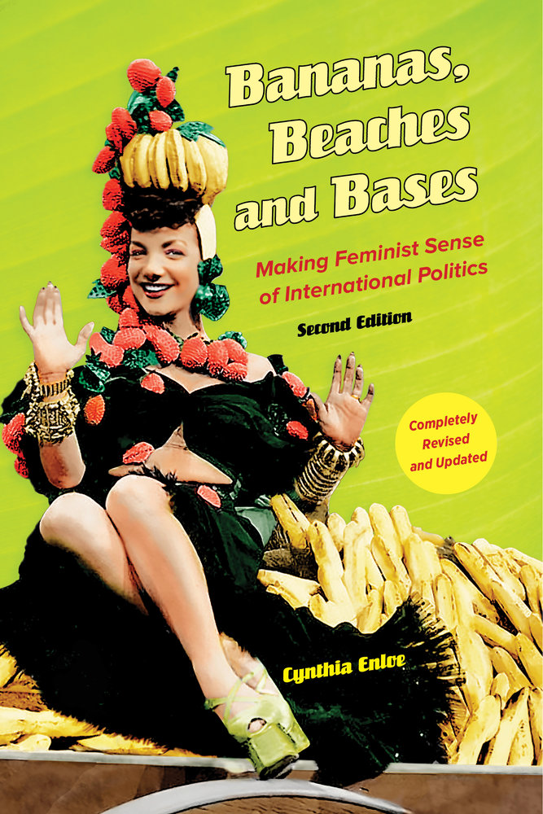

IV. What is the Future of Transnational Politics and IR?
Justin Leinaweaver (Spring 2026)
Theories of International Relations (so far)
Neorealism
Offensive Realism
Bargaining Model of War
Liberal Institutionalism
Economic Liberalism
Two-Level Games
Constructivism

Where Does Power Operate? (8-13)
Who Takes Seriously the Ideas of Transnational Feminists? (13-20)
What We Miss: Two Brief Case Studies (21-28)
Where Are the Men? (28-32)
Beyond the Global Victim (32-36)
Neorealism
Offensive Realism
Bargaining Model of War
Liberal Institutionalism
Economic Liberalism
Two-Level Games
Constructivism
Puechguirbal (2010) on Gender Policy in the UN
Vucetic and Persaud (2018) on race in International Relations
Before class submit to Canvas:
Find a current, or recent, international political event that explicitly deals with issues of colonialism, exploitation by the strong against the weak or race
Before class submit to our Canvas discussion board:
The APA citation for your evidence, and
A short explanation for why this case illustrates an under-explored issue in international politics